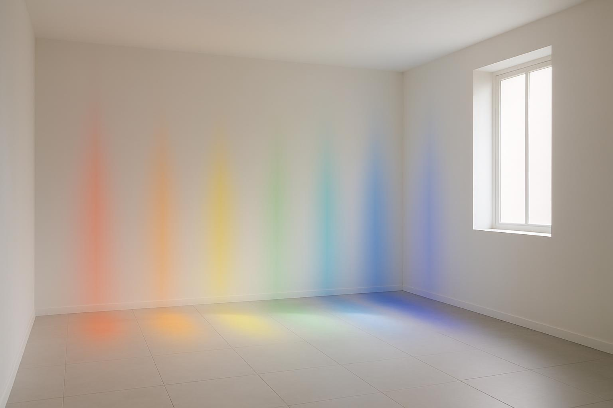
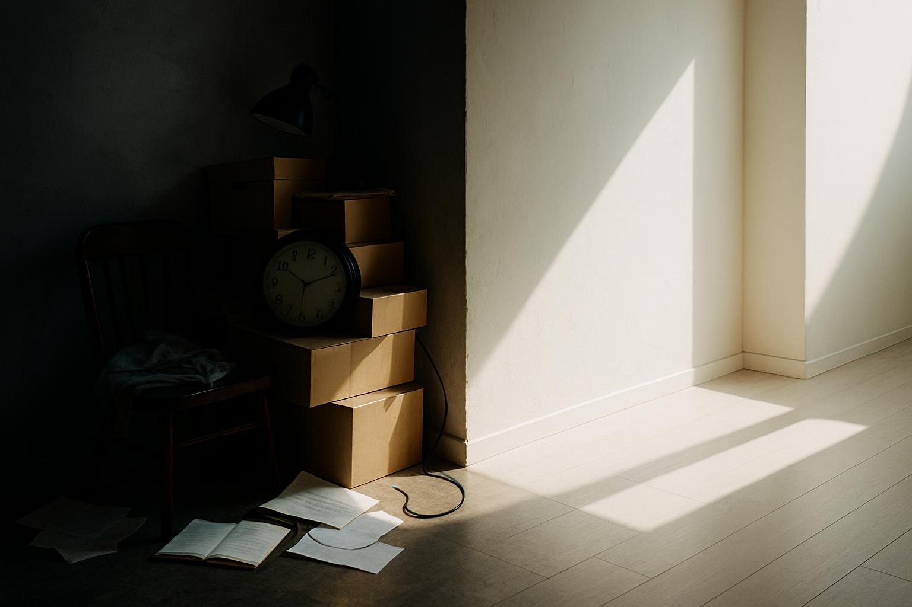

七輪能量與家居色彩風水
黎Sir 教你通過空間佈局，平衡身心靈，緩解 80% 焦慮
常見問題 FAQ
七輪能量跟風水有什麼關係？
七輪是人體七大能量中心，每個輪位對應特定顏色與情緒；風水則是調整環境能量流動。黎Sir將兩者結合，用正確色彩與佈局激活對應輪位，達到身心靈平衡。
什麼顏色能改善睡眠與焦慮？
藍色（喉輪與眉心輪）最具鎮靜效果，建議在臥室使用霧霾藍、淺灰藍或海軍藍，能降低心率、平靜思緒，顯著改善失眠。
如何用聲音淨化家居負能量？
播放432Hz或528Hz療癒音頻15-30分鐘，可與細胞產生共振，快速清除空間低頻雜亂能量，比傳統香薰更深層。
預約黎Sir諮詢需要準備什麼？
只需提供戶型圖（可手繪）＋出生年份，黎Sir會為您量身設計七輪＋風水雙重優化方案。
導讀： 您的家不僅是居住空間，更是您身心靈能量的充電站。黎Sir 結合東方風水智慧與西方七輪能量學，為您揭示如何通過精準的色彩、光線和佈局，調整家居環境的振動頻率，與您的七大能量中心產生共振，從而有效緩解焦慮、改善睡眠，實現內在的平靜與和諧。

七輪色彩與家居風水對應
色彩心理學與七輪對應：家居環境的「能量調色盤」
七輪（Chakras）是人體七個主要的能量中心，每個輪位都對應著特定的情緒、生理功能和色彩。通過在對應的家居區域使用正確的色彩，可以有效地平衡和強化該輪位的能量。
| 輪位 | 顏色 | 關鍵情緒/功能 | 建議家居區域 | 風水意義 |
|---|---|---|---|---|
| 海底輪 | 紅色/棕色 | 安全感、穩定、物質豐盛 | 玄關、儲藏室 | 穩固根基、聚財 |
| 臍輪 | 橙色 | 創造力、情感、慾望 | 娛樂室、工作室 | 激發靈感、人際和諧 |
| 太陽神經叢 | 黃色 | 自信、力量、意志力 | 書房、辦公區 | 提升事業運、決策力 |
| 心輪 | 綠色/粉色 | 愛、同情、關係 | 客廳、臥室 | 促進家庭和睦、人緣 |
| 喉輪 | 藍色 | 溝通、表達、真實 | 社交區 | 減少口舌是非 |
| 眉心輪 | 靛色 | 直覺、洞察力、智慧 | 冥想區、臥室 | 助學業、提升直覺 |
| 頂輪 | 紫色/白色 | 靈性連結、開悟 | 臥室高處 | 提升貴人運、心靈平靜 |
臥室的藍色與眉心輪： 在臥室使用柔和藍色調（如霧霾藍、淺灰藍），能幫助降低心率，平靜思維，促進深度睡眠。
想知道您的家哪個區域正阻塞能量？
立即預約黎Sir 七輪風水診斷
立即預約專業諮詢

空間能量阻塞與雜物清理
空間的「能量阻塞」與情緒困擾
家居中的雜物、死角和不良氣味，都會造成能量流動的阻塞，這在身心靈層面會體現為情緒壓抑與焦慮累積。
黎Sir 獨家淨化法：
- 聲音淨化： 使用 432Hz 或 528Hz 療癒音頻，快速清除低頻負能量。
- 光線淨化： 琥珀色燈光或自然光，模擬大自然頻率，重整空間電磁場。